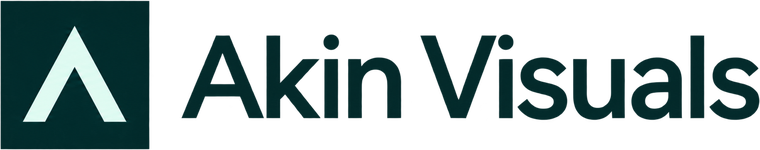
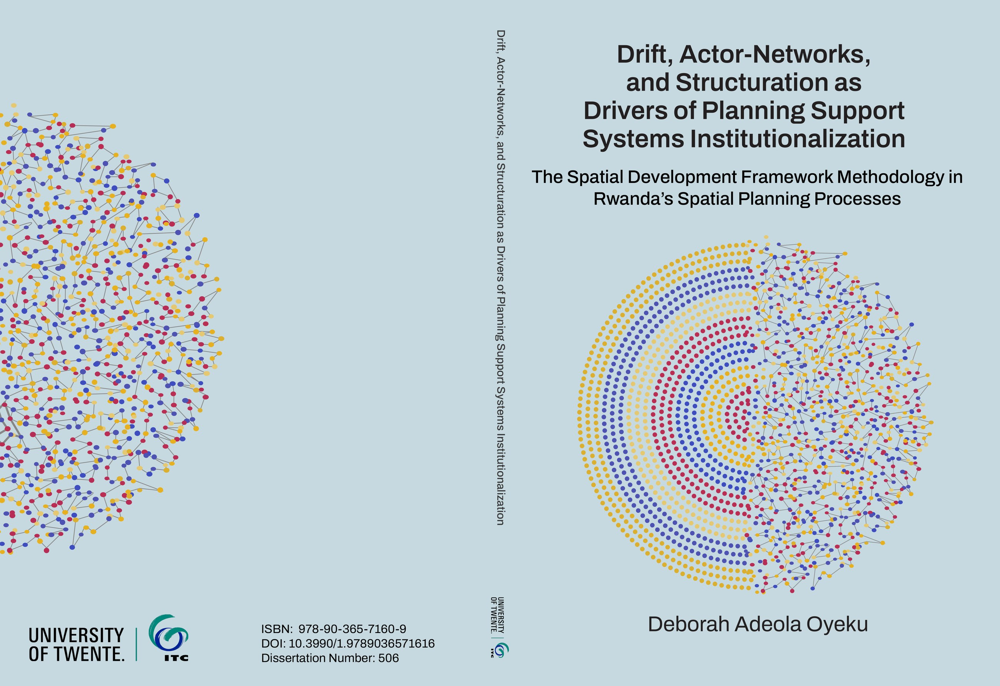
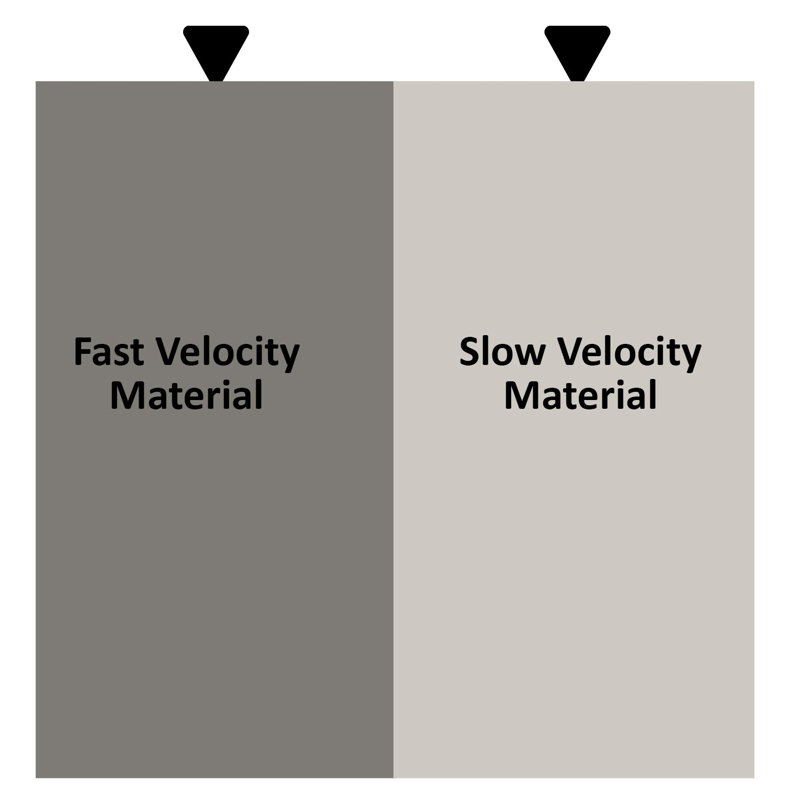

Geospatial & Data Visualization
See the patterns in your data
Maps, cartography, story maps and spatial data visualization that make complex patterns readable at a glance.
 See examples
See examples
“If it’s easy to understand, it was hard to make.”
Geo-visualization, scientific illustration, and animation for researchers and students who need their work seen — without losing what makes it rigorous.
What we do
Whatever your field, we turn complex research into clear, meaningful visual communication.
Geospatial & Data Visualization
Maps, cartography, story maps and spatial data visualization that make complex patterns readable at a glance.
See examplesScientific Design & Illustration
Thesis covers, research figures and technical illustrations, designed with the same precision as the science behind them.

See examplesAnimation & Motion
Animated explainers and motion graphics that show processes unfolding over time, for talks, teaching and outreach.
See examplesScience Communication
Visual narratives that connect data, maps and illustration, so non-specialists, stakeholders and decision-makers see the bigger picture.

See examplesAkin Visuals is a scientific visualization and storytelling studio. We work with researchers to turn data, methods and findings into maps, illustrations and animations that communicate the science clearly.
Stephen Akinremi is a scientific visualization specialist and illustrator working at the intersection of science and visual design. Every map, cover, illustration, and animation he produces draws on hands-on expertise in cartography, geospatial data analysis, and motion graphics — built to be accurate first, and genuinely engaging second.
Stephen holds a PhD in Seismology from the University of Twente, where he also completed his MSc in Geo-information Science and Geospatial Data Analysis. His scientific foundation began at Obafemi Awolowo University with a degree in Applied Geophysics.
For years, his research focused on imaging the deep, invisible structures and processes beneath the Earth’s surface — work that is technically intricate and profoundly difficult to show. That challenge became a calling. Communicating that research clearly to general audiences, stakeholders, and decision-makers demanded a different set of tools than science alone could offer. Visual science communication became the bridge — and it has been at the centre of his practice ever since.
Today, that same approach serves research well beyond the earth sciences. Whether the subject lies beneath the surface, across a landscape, or inside a system no one can see, the goal is the same: make it clear without making it any less true.
There is a quiet myth in science communication: that if something is simple to understand, the science behind it must not have been that deep, or the work that hard. The opposite is true. Anyone can present complexity as complexity — that is where most research begins. The real skill is transformation: taking years of rigorous work and rendering it clear, accurate, and immediately meaningful to someone who was never in the room where it was made.
Every map, illustration, and animation here is built on that principle.
“If it’s easy to understand, it was hard to make.”
A selection of scientific visualization, cartography, illustration and visual storytelling projects created to make complex research easier to understand.
Showing all 9 projects.
A mobility map tracing trajectories and destinations while illustrating the factors that shape movement patterns. The cartographic design supports a clearer reading of spatial routes and their relationships.
A thesis cover exploring planning-support systems institutionalization in Rwanda. Concentric patterns meet interconnected networks, referencing the relationship between spatial planning processes, actors and institutions. Designed for Deborah Adeola Oyeku, University of Twente — ITC.
A scientific motion visualization showing the spatial relationship between tectonic activity and earthquake occurrence. Animated mapping helps communicate geologic activity over time.
Scientific maps visualizing earthquake occurrence, tectonic structures and seismological station distribution. Carefully layered cartography makes spatial relationships across geological datasets easier to interpret.
A scientific data visualization of subsurface seismic velocity models, using cross-sectional views to communicate changes in the structure and properties of material beneath the surface.
Technical illustrations documenting seismometer sensor deployment and field configuration. The diagrams clarify instrument positioning and installation through structured scientific visual communication.
A research thesis cover depicting the crust and upper mantle of the Netherlands. Geological maps, seismic profiles and an illustrated subsurface scene bring the scientific subject into a cohesive visual narrative. Cover for Stephen’s own PhD thesis, University of Twente — ITC.
An explanatory visualization showing how seismic waves propagate through high- and low-velocity Earth materials toward seismic receivers. The illustration supports an understanding of wave travel and varying subsurface conditions.
A geological visualization exploring fault movement, the generation of earthquakes and the resulting changes at the surface. Composed to explain connections between subsurface processes and visible land deformation.
Selected contributions to scientific publications and research communication.
| Publication / Project | Publication | Year | Contribution |
|---|---|---|---|
| Spatiotemporal evolution of broadband seismological networks in the Netherlands and the added value of the NARS-DICTUM array | Annals of Geophysics | 2025 | Stephen Akinremi · First author |
| Drift, actor-networks, and structuration as drivers of planning support systems institutionalization | University of Twente | 2026 | Thesis cover for Debbie Oyeku |
| Deep, deeper, deepest-NL: Imaging the crust and upper mantle structure of The Netherlands | University of Twente | 2025 | Stephen Akinremi · Thesis author and cover designer |
The visual language transformed my research into something immediately understandable without compromising scientific accuracy.
The mapping and scientific illustrations achieved the rare balance between technical accuracy and clear visual communication.
Image editing and raster illustration.
Vector illustration and print design.
Scientific cartography and geospatial visualization.
Data processing, analysis and custom visualization.
Have a thesis cover, research figure, story map, or animation in mind? Tell us about it — we typically reply within 2 business days.